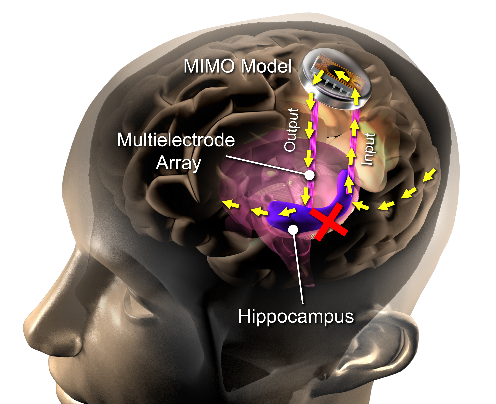

On Memory Neurotechnologies
An interactive introduction to memory neurotechnologies—and how you can help design them.
Part 1: What is Brain Stimulation?
Implantable and non-implantable neurostimulation is a growing area of research in Alzheimer’s disease and other forms of impaired cognition (Laxton 2010; Lozano 2016; Kuhn 2015; Sabbagh 2019). Building on the success of deep brain stimulation (DBS) in movement disorders and treatment resistant forms of psychiatric illness, and increasing interest in adaptative or brain-computer interface (BCI)-aided implanted devices, trials are on-going for treatment of dementia with targeted brain stimulation (NCT03347084; NCT03622905). The introduction of implantable neural devices in research and clinical practice has raised a number of social and ethical concerns. One of these concerns is how use of devices affect the experience of human agency – the ability to act and take ownership of experiences and action. Even if devices provide effective symptom treatment, as many do, they also may be experienced by users as alienating or foreign (Klein 2016; Haselager 2013; Schupbach 2006).

The Hippocampal Memory Prosthesis
This is a proof-of-concept device that delivers targeted electrical stimulation to the hippocampus and improves memory encoding.
The Algorithms
???
The Experimental Paradigm
This is a walkthrough of our experimental protocol.
Now that you’ve completed it, we know how your memory works!
The Results
???
Parting Words
Thank you for engaging with our content!